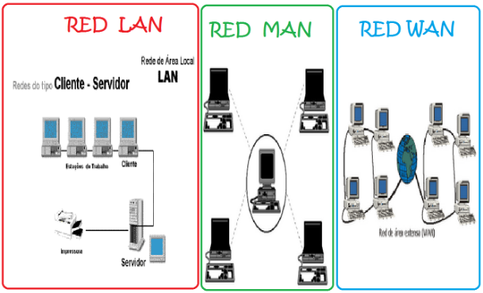
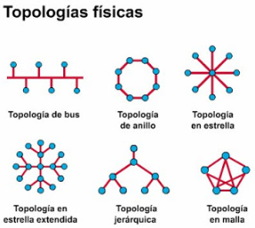
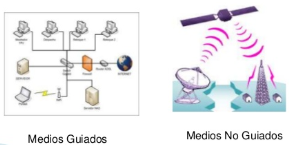

Una red es un conjunto de dispositivos físicos "hardware" y de programas "sofware", mediante el cual podemos comunicar computadoras para compartir recursos (discos, impresoras, programas, etc.) así como trabajo (tiempo de cálculo, procesamiento de datos, etc.). A cada una de las computadoras conectadas a la red se le denomina un nodo.
Los dispositivos físicos necesarios para construir una red son la tarjeta de comunicación instalada en cada una de las computadoras conectadas, el cableado que los une y los programas. Los programas de la red serán aquellos que establecen la comunicación entre las estaciones y los periféricos.
Las redes difieren entre sí por los servicios que pueden prestar a los usuarios, o por el tipo comunidad de usuarios atraídos por el servicio. Podemos dividir las redes de computadoras en las siguientes categorías principales, redes vinculadas a Internet que ofrecen las herramientas "Internet", redes fuera de líneas, proveedores de servicios comerciales, redes de conmutación (PSN).
Las redes de información se pueden clasificar según su extensión y su topología. Una red puede empezar siendo pequeña para crecer junto con la organización o institución. A continuación se presenta los distintos tipos de redes disponibles:
EXTENSIÓN
* Segmento de red (subred):
Un segmento de red suele ser definido por el "hardware" o una dirección de red específica. Por ejemplo, en el entorno "Novell NetWare", en un segmento de red se incluyen todas las estaciones de trabajo conectadas a una tarjeta de interfaz de red de un servidor y cada segmento tiene su propia dirección de red.
* Red de área locales (LAN): Una LAN es un segmento de red que tiene conectadas estaciones de trabajo y servidores o un conjunto de segmentos de red interconectados, generalmente dentro de la misma zona. Por ejemplo un edificio.
* Red de campus: Una red de campus se extiende a otros edificios dentro de un campus o área industial. Los disversos segmentos o LAN de cada edificio suelen conectarse mediante cables de la red de soporte.
* Red de área metropolitanas (MAN): Una red MAN es una red que se expande por pueblos o ciudades y se interconecta mediante diversas instalaciones públicas o privadas, como el sistema telefónico o los suplidores de sistemas de comunicación por microondas o medios ópticos.
* Red de área extensa (WAN y redes globales): Las WAN y redes globales se extienden sobrepasando las fronteras de las ciudades, pueblos o naciones. Los enlaces se realizan con instalaciones de telecomunicaciones públicas y privadas, además por microondas y satélites.

TOPOLOGÍA
La topología o forma lógica de una red se define como la forma de tender el cable a estaciones de trabajo individuales; por muros, suelos y techos del edificio. Existe un número de factores a considerar para determinar cual topología es la más apropiada para una situación dada. Existen tres topologías comunes:
* Anillo: Las estaciones están unidas unas con otras formando un círculo por medio de un cable común. El último nodo de la cadena se conecta al primero cerrando el anillo. Las señales circulan en un solo sentido alrededor del círculo, regenerándose en cada nodo. Con esta metodología, cada nodo examina la información que es enviada a través del anillo. Si la información no está dirigida al nodo que la examina, la pasa al siguiente en el anillo. La desventaja del anillo es que si se rompe una conexión, se cae la red completa.
* Estrella: La red se une en un único punto, normalmente con un panel de control centralizado, como un concentrador de cableado. Los bloques de información son dirigidos a través del panel de control central hacia sus destinos. Este esquema tiene una ventaja al tener un panel de control que monitorea el tráfico y evita las colisiones y una conexión interrunpida no afecta al resto de la red.
* Bus: Las estaciones están conectadas por un único segmento de cable . A diferencia del anillo, el bus es pasivo, no se produce regeneración de las señales en cada nodo. Los nodos en una red de "bus" transmiten la información y esperan que ésta no vaya a chocar con otra información transmitida por otro de los nodos. Si esto ocurre, cada nodo espera una pequeña cantidad de tiempo al azar, después intenta retransmitir la información.

COMPONENTES DE UNA RED
Una red de computadoras consta de "hardware" y "software". En el "hardware" se incluyen las tarjetas de interfaz de red y los cables que las unen y en el "software" se encuentran los sistemas operativos del servidor, los protocolos de comunicación y los controladores de tarjetas de interfaz de la red. Para seleccionar el sistema operativo hay que saber la manera en que la red esta organizada. Las redes se pueden organizar en: cliente-servidor, servidor de archivos y computación par a par. El "software" puede incorporar varias funciones de seguridad, proporciona los protocolos de comunicación y el manejo de la tarjeta de interfaz de la red. Entre ellos podemos mencional Microsoft Windows para trabajo en grupos, Microsoft Windows NT, Novell NetWare y Artisoft LANtastic.
El medio físico es el medio utilizado para conectar los equipos informáticos que constituyen la red. Existen dos tipos de medios:
* Medio guiado: En él se incluye el cable de metal (cobre, aluminio,etc.) y cable defibra óptica. El cable suele instalarse dentro de los edificios o conducciones subterráneas. Entre los cables de metal se incluye el cable de par trenzado y el cable coaxial. También hay disponible cable de fibra óptica con uno o varios filamentos de fibras de plástico o cristal.
* Medio no guiado: El representa la técnica que se utiliza para transmitir señales por el aire y el espacio desde el transmisor al receptor, tales como infrarrojos y microondas. Con este medio se pueden cubrir distancias más grandes.
